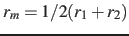
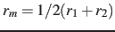
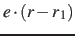
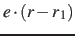
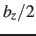
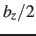

The distanceZ {...} block defines a distance projection
component, which can be seen as measuring the distance between two
groups projected onto an axis, or the position of a group along such
an axis. The axis can be defined using either one reference group and
a constant vector, or dynamically based on two reference groups.
-
main Main group of atoms

Context: distanceZ, distanceXY
Acceptable values: Block main {...}
Description: Group of atoms whose position
is measured.
-
ref Reference group of
atoms
Context: distanceZ, distanceXY
Acceptable values: Block ref {...}
Description: Reference group of atoms. The position of its center of mass is
noted
 below.
below.
-
ref2 Secondary reference
group
Context: distanceZ, distanceXY
Acceptable values: Block ref2 {...}
Default value: none
Description: Optional group of reference atoms, whose position
 can
be used to define a dynamic projection axis:
can
be used to define a dynamic projection axis:
 . In this case,
the origin is
, and the value
of the component is
. In this case,
the origin is
, and the value
of the component is
 .
.
-
axis Projection axis (Å)
Context: distanceZ, distanceXY
Acceptable values: (x, y, z) triplet
Default value: (0.0, 0.0, 1.0)
Description: The three components of this vector define (when normalized) a
projection axis
 for the distance vector
for the distance vector
 joining the centers of groups ref and
main. The value of the component is then
. The vector should be written as three
components separated by commas and enclosed in parentheses.
joining the centers of groups ref and
main. The value of the component is then
. The vector should be written as three
components separated by commas and enclosed in parentheses.
-
forceNoPBC Calculate absolute rather than minimum-image distance?
Context: distanceZ, distanceXY
Acceptable values: boolean
Default value: no
Description: This parameter has the same meaning as that described above for the distance
component.
-
oneSiteSystemForce Measure system force on group main only?
Context: distanceZ, distanceXY
Acceptable values: boolean
Default value: no
Description: If this is set to yes, the system force is measured along a
vector field (see equation (19) in
section 6.1) that only involves atoms of main.
This option is only useful for ABF, or custom biases that compute
system forces. See section 6.1 for details.
This component returns a number (in Å) whose range is determined
by the chosen boundary conditions. For instance, if the  axis is
used in a simulation with periodic boundaries, the returned value ranges
between
axis is
used in a simulation with periodic boundaries, the returned value ranges
between  and , where
and , where  is the box length
along (this behavior is disabled if forceNoPBC is set).
is the box length
along (this behavior is disabled if forceNoPBC is set).
Jérôme Hénin
2015-03-03